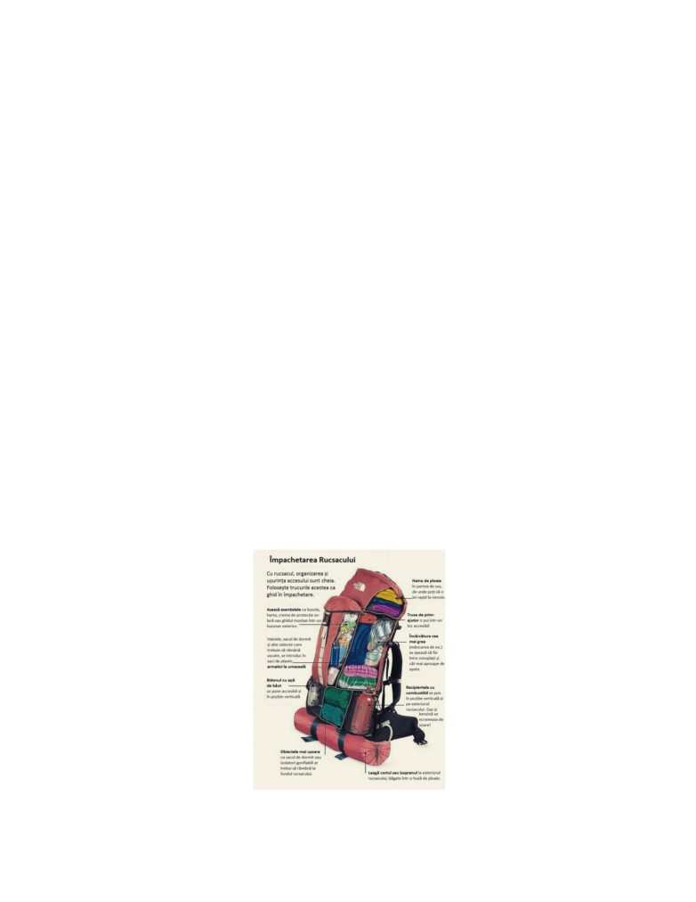

Sava Cristina-Andreeea
Sfaturi pentru supraviețuirea în pădure
Cu toții ne dorim să avem un moment de relaxare, de mers în pădure, la aer liber,
dar oare cu toții reușim să fim pregătiți în caz de orice se ivește în drumul nostru?
Fiind cercetaș la Organizația Națională Cercetașii României, am învățat de-a lungul
participării mele voluntare la activitățile desfășurate în cadrul centrului local Orion din Miercurea
Ciuc, o multitudine de trucuri de supraviețuire în pădure. Consider că nu toată lumea a avut parte
de asemenea oportunități și în consecință, voi încerca să prezint în următoarele rânduri câteva
dintre trucurile care ar putea ajuta fiecare om pasionat de mersul în natură, în cazuri extreme, dar
și în cazuri de relaxare.
Cum ne facem rucsacul de mers pe munte.
Primul pas înainte de a merge în drumuție pe munte, sau în natură, este pregătirea bagajului.
Acesta este foarte important deoarece un rucsac făcut necorespunzător, poate să ne îngreuneze
întreaga drumeție, fapt care poate duce la neplăceri. În primul rând, trebuie să știm că există mai
multe tipuri de rucsaci, și trebuie să găsim unul potrivit pentru noi: pe mătura potrivită, cu greutatea
adecvată pentru tipul activități pe care urmează să o desfășurăm. Al doilea criteriu pe care trebuie
să îl luăm în considerare este faptul că trebuie să ne gândim la strictul necesar de care o să avem
nevoie, deoarece mult bagaj în rucsac poate să ne îngreuneze mersul. Avem nevoie să luăm în
considerare cât de lungă este drumeția, care este gradul de dificultate al traseului, și vremea pe
care urmează să o întâlnim în drumul nostru. Cel mai bun sfat, indiferent de criteriile enumerate
anterior, este să ne îmbrăcăm mereu pe straturi: astfel să ne gândim costumația de pe întregul
traseu. O să atașez o fotografie cu rol informativ, pentru a ne ajuta în organizarea rucsacului.Ceea
ce este de reținut este că orice punem în rucsacul de munte să fie împachetat în pungi, pentru a ne
proteja lucrurile în caz de umiditate.
Sava Cristina-Andreeea
Aprinderea focului în pădure.
Pentru a aprinde focul în pădure avem nevoie de: lemne uscate și subțiri, lemne din ce în
ce mai groase, și lemne serioase, groase, pentru întreținerea focului.Ingredientul principal pentru
aprinderea focului este ceva inflamabil de exemplu: rășină de brad, iască uscată, barba moșului
sau un ambalaj de hârtie. Avem grijă unde amplasăm focul, și facem o vatră din pietre mai mari,
înăuntrul căreia așezăm elementele precizate mai sus, în ordinea următoare: rășina de brad( sau
dintre celelalte ingrediente inflamabile) , lemnele mici și uscate, apoi lemnele mai mari.Le punem
astfel încât focul să aibă aer suficient pentru a se aprinde. După această așezare, putem da foc celor
aflate în vatră. În momentul în care crenguțele uscate s-au aprins, construim deasupra lor o
piramidă din lemnele un pic mai groase, având grijă să lăsăm suficient aer. Trebuie să avem grijă
de direcția din care bate vântul, astfel punând lemnele în partea opusă acestuia. După ce focul arde
suficient, punem cele mai groase lemne, și întreținem focul. În altă ordine de idei, trebuie să avem
grijă în momentul în care plecăm de lângă foc, ca acesta să fie complet stins și să ne putem continua
drumul.
Montarea în siguranță a cortului.
În drumețiile mai lungi de o zi sau câteva ore, avem nevoie de un loc unde să dormim.
Prima etapă în această activitate este căutarea unui loc drept, destul de deschis, astfel încât să avem
vedere în jurul cortului, pentru a ne putea asigura de prezența animalelor sălbatice. Este esențial
să alegem un cort care să fie suficient de mare încât să încapă numărul persoanelor care se află în
drumeție, și bagajele lor. Așadar, primul pas în montarea cortului este: ridicarea camerei cortului
astfel încât aceasta să fie cât mai tensionată. Pasul al doilea este montatul cuielor, având grijă să
avem încă în tensiune camera cortului pe care am amplasat-o în pasul anterior. Mai apoi, începem
montarea supratentei, care urmează să ne protejeze în caz de vânt, sau ploaie. Aceasta se montează
pe bețele care susțin camera, și de asemenea se ancorează cât mai tensionat. Astfel ar trebui să
reușim să ne montăm cortul în siguranță.
Cum ne putem proteja de câinii de stână.
Se întâmplă adesea ca într-o drumeție pe munte, sau în pădure, să ne întâlnim cu stâne care
să aibă ca supraveghetori mai mulți câini ciobănești. Aceștia tind să fie agresivi, pentru a apăra
oile pe care le au în supraveghere. Cum ne putem proteja de ei fără să ne speriem noi, dar fără să
îi speriăm nici pe ei? În funcție de cât de mulți ne aflăm , ne grupăm și formăm cu rucsasii de
munte un zid apărător, astfel încât dacă suntem atacați de câinii de stână, aceștia să muște din
rucsac.În aceeași formație, ne deplasăm cât mai încet, chiar dacă suntem încă urmăriți de câini.
Trebuie să fim cât mai prudenți, și să încercăm să ne menținem calmul până reușim să trecem de
ei.
Sava Cristina-Andreeea
Acordarea primului ajutor în caz de nevoie.
Este de luat la cunoștință faptul că putem să ne accidentăm pe traseul pe care ne aflăm, și
este esențial să cunoaștem câteva lucruri despre cum tratăm o rană. Bineînțeles, am ales să vorbesc
despre răni minore, dar în cazuri extreme, cel mai indicat este să apelăm la oameni calificați.
Așadar, cum tratăm o rană minoră pe care au reușim să o facem în pădure? Avem nevoie de: apă
curată, pansament, dezinfectant ( de preferat: betadină) și ceva cu care să putem tăia pansamentul
( de exemplu: un briceag, care se poate dovedi folositor în mai multe cazuri). În momentul
producerii rănii, ne oprim, și primul lucru pe care îl facem este să spălăm rana cu apă curată, fără
să o atingem. Mai apoi, aplicăm pe o bucată de pansament dezinfectant, pe care îl punem cu
presiune asupra rănii. Pasul esențial este însășurarea rănii cu pansament, având grijă să nu strângem
prea tare, să acoperim toată zonă afectată, și să nu o atingem în timpul precesului. Astfel, putem
să oferim primul ajutor în pădure, reușind să trecem peste incident și să ne continuăm traseul.
Așadar, am prezentat anterior mai multe trucuri care ar putea să fie folositoare într-o
drumeție pe munte, sau în pădure, după placul fiecăruia. Bineînțeles, există mult mai multe aspecte
la care trebuie să fim atenți înainte de planificarea unei astfel de drumeții. Este indicat să alegem
un traseu pe care să știm că putem să îl ducem până la capăt și să știm să îl urmăm. Odată ce reușim
să ne simțim în siguranță și stabili pe ceea ce urmează să facem, nu ne rămâne decât să ne bucurăm
de activitatea în natură și bineînțeles, de priveliștile minunate pe care aceasta le are de oferit.